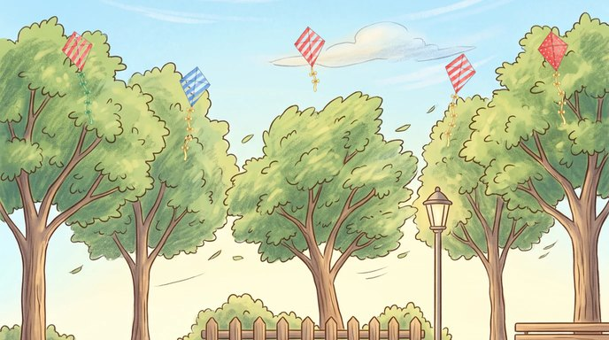
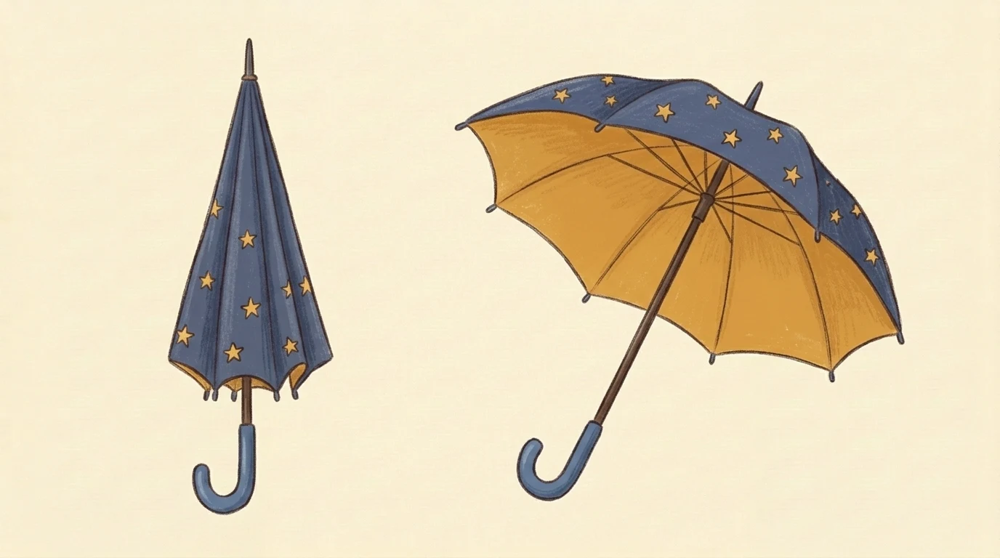

사건 탭 코르크판에서 사건 사진과 사진 사이, 빨간 실 위에 미니게임(철자 금고)을 꽂는 세 가지 모양입니다.
위 사진은 해결한 사건, 아래 사진은 다음 사건입니다. 해결한 사건 뒤의 미니게임은 반짝이며 열리고, 아직 풀지 않은 사건 뒤의 것은 회색 압정·잠금으로 보입니다.

SOLVEDCASE 01사라진 연
철자 금고

새로운 의뢰!CASE 02주인 없는 우산
A. 실에 매달린 작은 금고
빨간 실 한가운데에 작은 금고가 꽂혀 있고 이름 쪽지가 붙어 있습니다. 미니게임마다 소품 모양이 달라 무엇을 하는지 바로 보입니다.
새 그림: 금고 소품 1개(나중에 Higgsfield, 지금은 CSS)
사건 사진보다 작아 판이 길어지지 않음
SOLVEDCASE 01사라진 연
단어 훈련철자 금고 · 단어 5개시작
새로운 의뢰!CASE 02주인 없는 우산
B. 줄 쳐진 색인 카드
사건 메모처럼 보이는 색인 카드에 미니게임 이름과 단어 수가 적혀 있습니다. 글이 많아 무엇을 하는지 가장 분명합니다.
새 그림 없음
사건 사진과 모양이 달라 "쉬어 가는 칸"으로 구분됨
SOLVEDCASE 01사라진 연
TRAINING철자 금고
새로운 의뢰!CASE 02주인 없는 우산
C. 작은 폴라로이드
사건 사진과 같은 폴라로이드를 작게 만들어 사이에 꽂습니다. 판의 모양이 가장 고르게 이어집니다.